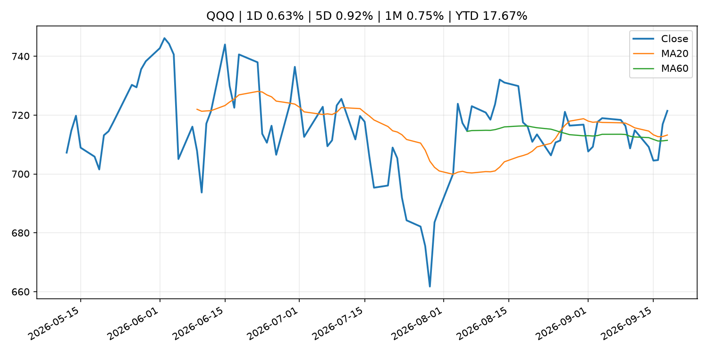
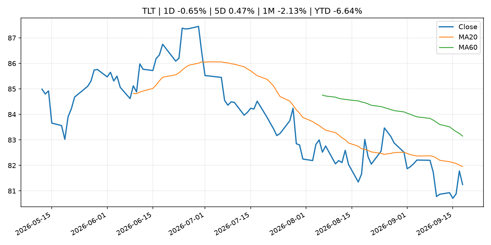
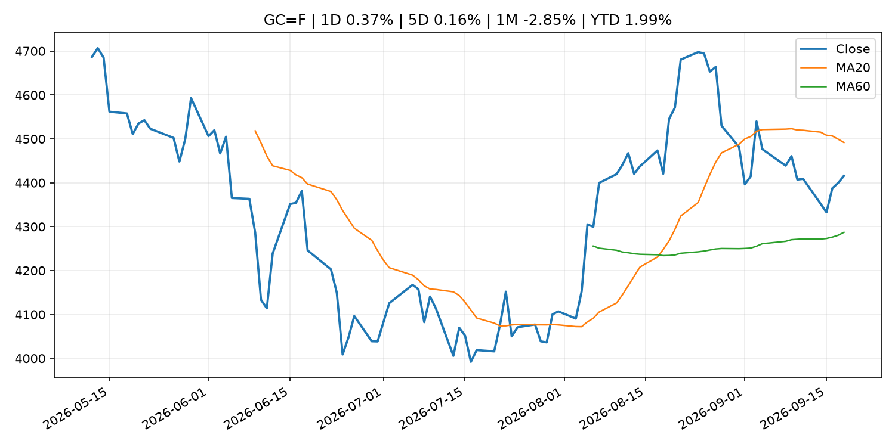
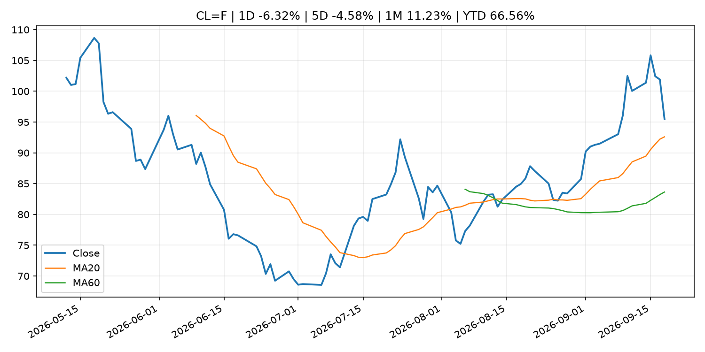
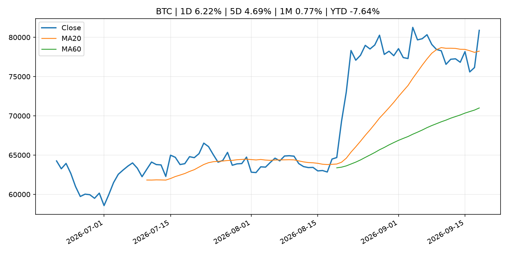
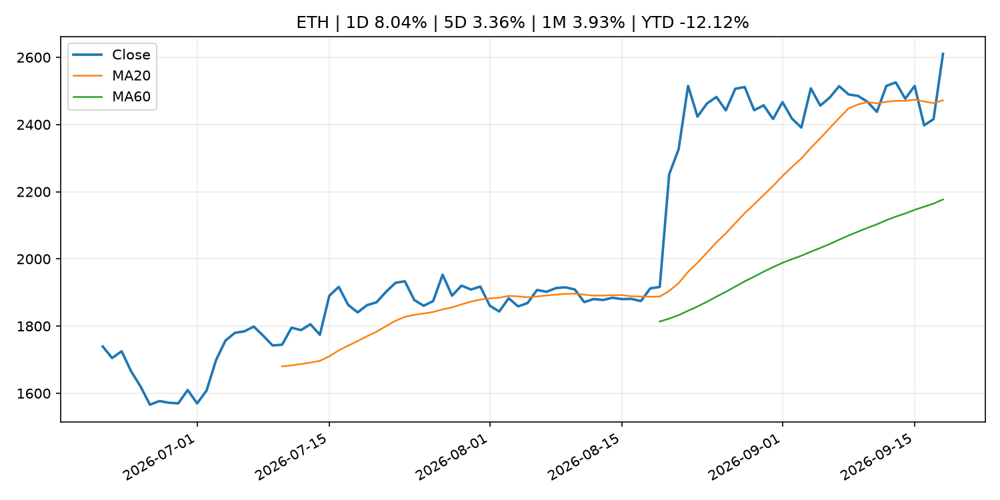
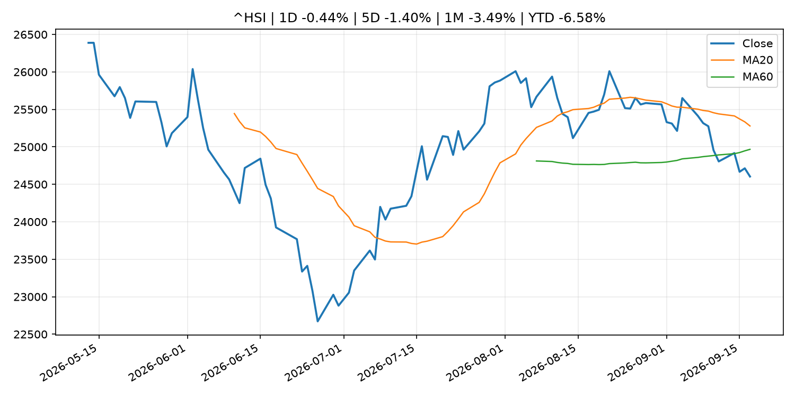

Global Macro Morning Briefing - 2026-09-19
Not financial advice / 非投资建议。
0. 今日总览
- 市场状态：unknown。市场信号不足，暂不判断明确状态。
- 今日三大主线：
- central_bank_decision: My rental property is paid off, but I need cash. Is this a bad time to take out a $50,000 HELOC?
- earnings: Amazon, Palantir and 12 more top tech stock picks from UBS analysts
- regulation: Real stocks are finally coming on blockchain. Here’s how the SEC wants it to work
- 一句话结论：今日晨报重点关注：央行决策会重定价利率、汇率、久期资产和风险资产。；大型科技股盈利和资本开支会影响纳指、半导体和 AI 交易主线。。跨资产方面，SPY 1D -0.12%；QQQ 1D 0.63%；^VIX 1D -4.08%；TLT 1D -0.65%；GC=F 1D 0.37%；CL=F 1D -6.32%；BTC 1D 6.22%；ETH 1D 8.04%；市场信号不足，暂不判断明确状态。政策、通胀、利率、美元、美债、能源和加密监管仍是主要观察线索。所有结论仅基于公开数据与短摘要整理，不构成投资建议。
1. 隔夜跨资产市场
- 美股：SPY 1D -0.12%，QQQ 1D 0.63%，整体趋势需结合 VIX 和利率确认。
- 美债/美元：TLT 1D -0.65%，美元指数 1D -0.00%，是判断折现率压力的核心线索。
- 黄金/原油：黄金 1D 0.37%，原油 1D -6.32%，用于观察避险、通胀和地缘风险。
- 加密：BTC 1D 6.22%，ETH 1D 8.04%，关注是否独立于纳指走出加密自身行情。
- 港股/A股：恒生 1D -0.44%，沪深300/上证 1D n/a，重点看中国政策预期与人民币线索。
- 风险观察：关注后续数据是否确认当前跨资产信号。
US_EQUITY
| symbol | latest close | 1D | 5D | 1M | YTD | trend |
|---|---|---|---|---|---|---|
| SPY | 761.69 | -0.12% | -0.34% | -0.96% | 11.49% | range_bound |
| QQQ | 721.45 | 0.63% | 0.92% | 0.75% | 17.67% | uptrend |
| DIA | 515.88 | -0.48% | -1.88% | -3.44% | 6.67% | range_bound |
| IWM | 284.10 | -0.47% | -1.66% | -5.84% | 14.20% | strong_downtrend |
| VTI | 375.43 | 0.02% | -0.23% | -1.20% | 11.63% | range_bound |
US_MACRO_MARKET
| symbol | latest close | 1D | 5D | 1M | YTD | trend |
|---|---|---|---|---|---|---|
| ^VIX | 14.81 | -4.08% | -6.50% | -7.50% | 2.07% | downtrend |
| DX-Y.NYB | 100.21 | -0.00% | 1.10% | 1.40% | 1.82% | range_bound |
| TLT | 81.25 | -0.65% | 0.47% | -2.13% | -6.64% | downtrend |
| IEF | 90.80 | -0.49% | -0.23% | -2.76% | -5.50% | downtrend |
COMMODITIES
| symbol | latest close | 1D | 5D | 1M | YTD | trend |
|---|---|---|---|---|---|---|
| GC=F | 4,415.90 | 0.37% | 0.16% | -2.85% | 1.99% | range_bound |
| SI=F | 66.79 | 2.01% | 3.46% | 1.60% | -5.34% | uptrend |
| CL=F | 95.47 | -6.32% | -4.58% | 11.23% | 66.56% | strong_uptrend |
| BZ=F | 98.77 | -5.77% | -5.58% | 7.80% | 62.58% | strong_uptrend |
| NG=F | 2.90 | -0.07% | 2.40% | 3.02% | -19.87% | range_bound |
| HG=F | 6.72 | 1.96% | 3.80% | 3.51% | 19.07% | strong_uptrend |
HK_MARKET
| symbol | latest close | 1D | 5D | 1M | YTD | trend |
|---|---|---|---|---|---|---|
| ^HSI | 24,604.29 | -0.44% | -1.40% | -3.49% | -6.58% | range_bound |
| 0700.HK | 419.00 | -1.64% | -2.19% | -7.18% | -32.74% | strong_downtrend |
| 9988.HK | 109.30 | 4.00% | 1.67% | -13.39% | -26.64% | strong_downtrend |
| 3690.HK | 73.20 | 0.41% | -2.53% | -14.74% | -30.02% | strong_downtrend |
| 1810.HK | 26.40 | 0.99% | 0.15% | -4.90% | -34.46% | range_bound |
| 1211.HK | 81.50 | 0.43% | 2.07% | -11.22% | -17.47% | strong_downtrend |
CRYPTO
| symbol | latest close | 1D | 5D | 1M | YTD | trend |
|---|---|---|---|---|---|---|
| BTC | 80,886.68 | 6.22% | 4.69% | 0.77% | -7.64% | uptrend |
| ETH | 2,610.15 | 8.04% | 3.36% | 3.93% | -12.12% | strong_uptrend |
| SOLANA | 112.81 | 14.47% | 10.86% | 3.32% | -9.41% | strong_uptrend |
| BINANCECOIN | 761.44 | 4.97% | 4.68% | 6.94% | -11.74% | strong_uptrend |
| RIPPLE | 1.40 | 7.56% | 2.21% | -3.93% | -24.13% | uptrend |
2. 今日最重要的 10 条新闻
1. My rental property is paid off, but I need cash. Is this a bad time to take out a $50,000 HELOC?
- 来源：MarketWatch Top Stories
- 时间：2026-09-18T20:01:00+00:00
- 地区：US
- 事件类型：central_bank_decision
- 重要性层级：Tier 1
- 一句话摘要：The Federal Reserve announced a quarter-percentage-point interest-rate hike Wednesday, to a range of 3.75%-4.0%.
- 为什么重要：央行决策会重定价利率、汇率、久期资产和风险资产。
- 可能影响：主要影响 QQQ，方向为 negative，强度 high；鹰派政策提高折现率，压制成长股估值。
- 资产：QQQ 方向：negative 强度：high 原因：鹰派政策提高折现率，压制成长股估值。
- 资产：SPY 方向：negative 强度：medium 原因：更紧政策通常削弱风险偏好。
- 资产：TLT 方向：negative 强度：high 原因：利率上行通常压低长债价格。
- 资产：DXY 方向：positive 强度：high 原因：更高利率预期通常支撑美元。
- 资产：BTC 方向：negative 强度：high 原因：流动性收紧通常压制高 beta 加密资产。
- 原文链接：https://www.marketwatch.com/story/my-rental-property-is-paid-off-but-i-need-cash-is-this-a-bad-time-to-take-out-a-50-000-heloc-d094bbc5?mod=mw_rss_topstories
2. Amazon, Palantir and 12 more top tech stock picks from UBS analysts
- 来源：MarketWatch Top Stories
- 时间：2026-09-18T21:14:00+00:00
- 地区：US
- 事件类型：earnings
- 重要性层级：Tier 2
- 一句话摘要：The AI data-center buildout is still early, and UBS says investors can cash in through investments across the technology, media and telecommunications sectors.
- 为什么重要：大型科技股盈利和资本开支会影响纳指、半导体和 AI 交易主线。
- 可能影响：主要影响 QQQ，方向为 mixed，强度 high；AI 资本开支会影响大型科技股盈利和估值预期。
- 资产：QQQ 方向：mixed 强度：high 原因：AI 资本开支会影响大型科技股盈利和估值预期。
- 资产：SMH 方向：mixed 强度：high 原因：AI 投资周期直接影响半导体需求。
- 资产：NVDA 方向：mixed 强度：high 原因：AI 训练和推理需求是英伟达收入预期核心变量。
- 资产：MSFT 方向：mixed 强度：medium 原因：云和 AI 资本开支影响利润率与增长叙事。
- 资产：GOOGL 方向：mixed 强度：medium 原因：AI 投资和搜索商业化影响估值。
- 资产：META 方向：mixed 强度：medium 原因：AI 基建支出与广告效率共同影响市场预期。
- 原文链接：https://www.marketwatch.com/story/amazon-palantir-and-12-more-top-tech-stock-picks-from-ubs-analysts-435244bb?mod=mw_rss_topstories
3. Real stocks are finally coming on blockchain. Here’s how the SEC wants it to work
- 来源：CoinDesk
- 时间：2026-09-17T21:47:22+00:00
- 地区：global
- 事件类型：regulation
- 重要性层级：Tier 2
- 一句话摘要：Real stocks are finally coming on blockchain. Here’s how the SEC wants it to work
- 为什么重要：监管变化会改变行业盈利预期和资产风险溢价。
- 可能影响：主要影响 BTC，方向为 mixed，强度 high；加密监管或 ETF 进展会改变 BTC 的资金流和风险溢价。
- 资产：BTC 方向：mixed 强度：high 原因：加密监管或 ETF 进展会改变 BTC 的资金流和风险溢价。
- 资产：ETH 方向：mixed 强度：high 原因：监管框架会影响 ETH 产品化和机构参与度。
- 资产：COIN 方向：mixed 强度：medium 原因：监管清晰度和执法风险会影响交易平台估值。
- 资产：crypto market 方向：mixed 强度：high 原因：信息影响整个加密市场结构，但方向取决于细节。
- 原文链接：https://www.coindesk.com/business/2026/09/17/real-stocks-are-finally-coming-on-blockchain-here-s-how-the-sec-wants-it-to-work
4. SEC Issues “Innovation Exemption” to Facilitate the Trading of Tokenized NMS Stock and Request for Comment
- 来源：SEC Press Releases
- 时间：2026-09-17T08:55:00-04:00
- 地区：US
- 事件类型：regulation
- 重要性层级：Tier 2
- 一句话摘要：The SEC is taking a significant step forward, within its statutory authority, to bring America’s capital markets into the digital age by facilitating onchain trading of certain tokenized stocks.
- 为什么重要：监管变化会改变行业盈利预期和资产风险溢价。
- 可能影响：主要影响 BTC，方向为 mixed，强度 high；加密监管或 ETF 进展会改变 BTC 的资金流和风险溢价。
- 资产：BTC 方向：mixed 强度：high 原因：加密监管或 ETF 进展会改变 BTC 的资金流和风险溢价。
- 资产：ETH 方向：mixed 强度：high 原因：监管框架会影响 ETH 产品化和机构参与度。
- 资产：COIN 方向：mixed 强度：medium 原因：监管清晰度和执法风险会影响交易平台估值。
- 资产：crypto market 方向：mixed 强度：high 原因：信息影响整个加密市场结构，但方向取决于细节。
- 原文链接：https://www.sec.gov/newsroom/press-releases/2026-90-sec-issues-innovation-exemption-facilitate-trading-tokenized-nms-stock-request-comment
5. SEC opens door to tokenized U.S. stock trading. Here’s who could benefit
- 来源：CoinDesk
- 时间：2026-09-17T18:38:10+00:00
- 地区：global
- 事件类型：regulation
- 重要性层级：Tier 2
- 一句话摘要：SEC opens door to tokenized U.S. stock trading. Here’s who could benefit
- 为什么重要：监管变化会改变行业盈利预期和资产风险溢价。
- 可能影响：主要影响 BTC，方向为 mixed，强度 high；加密监管或 ETF 进展会改变 BTC 的资金流和风险溢价。
- 资产：BTC 方向：mixed 强度：high 原因：加密监管或 ETF 进展会改变 BTC 的资金流和风险溢价。
- 资产：ETH 方向：mixed 强度：high 原因：监管框架会影响 ETH 产品化和机构参与度。
- 资产：COIN 方向：mixed 强度：medium 原因：监管清晰度和执法风险会影响交易平台估值。
- 资产：crypto market 方向：mixed 强度：high 原因：信息影响整个加密市场结构，但方向取决于细节。
- 原文链接：https://www.coindesk.com/business/2026/09/17/sec-opens-door-to-tokenized-u-s-stock-trading-here-s-who-could-benefit
6. U.S. SEC begins prepping for around-the-clock trading that crypto treats as the norm
- 来源：CoinDesk
- 时间：2026-09-17T15:03:19+00:00
- 地区：global
- 事件类型：regulation
- 重要性层级：Tier 2
- 一句话摘要：U.S. SEC begins prepping for around-the-clock trading that crypto treats as the norm
- 为什么重要：监管变化会改变行业盈利预期和资产风险溢价。
- 可能影响：主要影响 BTC，方向为 mixed，强度 high；加密监管或 ETF 进展会改变 BTC 的资金流和风险溢价。
- 资产：BTC 方向：mixed 强度：high 原因：加密监管或 ETF 进展会改变 BTC 的资金流和风险溢价。
- 资产：ETH 方向：mixed 强度：high 原因：监管框架会影响 ETH 产品化和机构参与度。
- 资产：COIN 方向：mixed 强度：medium 原因：监管清晰度和执法风险会影响交易平台估值。
- 资产：crypto market 方向：mixed 强度：high 原因：信息影响整个加密市场结构，但方向取决于细节。
- 原文链接：https://www.coindesk.com/policy/2026/09/17/u-s-sec-begins-prepping-for-round-the-clock-trading-that-crypto-treats-as-the-norm
7. Federal Reserve Board announces termination of enforcement action with SNB Bancshares and Bank of Eufaula
- 来源：Federal Reserve Press Releases
- 时间：2026-09-18T15:00:00+00:00
- 地区：US
- 事件类型：regulation
- 重要性层级：Tier 2
- 一句话摘要：Federal Reserve Board announces termination of enforcement action with SNB Bancshares and Bank of Eufaula
- 为什么重要：监管变化会改变行业盈利预期和资产风险溢价。
- 可能影响：可能影响利率、汇率、风险资产或大宗商品预期，但当前公开信息不足以判断明确方向。
- 资产：暂无明确资产映射
- 方向：unknown
- 强度：low
- 原因：公开信息不足以判断方向。
- 原文链接：https://www.federalreserve.gov/newsevents/pressreleases/enforcement20260918b.htm
8. Federal Reserve Board issues enforcement actions with former employee of Northstar Bank, former employee of American Express Travel Related Services Company, Inc., and former employee of Regions Bank
- 来源：Federal Reserve Press Releases
- 时间：2026-09-18T15:00:00+00:00
- 地区：US
- 事件类型：regulation
- 重要性层级：Tier 2
- 一句话摘要：Federal Reserve Board issues enforcement actions with former employee of Northstar Bank, former employee of American Express Travel Related Services Company, Inc., and former employee of Regions Bank
- 为什么重要：监管变化会改变行业盈利预期和资产风险溢价。
- 可能影响：可能影响利率、汇率、风险资产或大宗商品预期，但当前公开信息不足以判断明确方向。
- 资产：暂无明确资产映射
- 方向：unknown
- 强度：low
- 原因：公开信息不足以判断方向。
- 原文链接：https://www.federalreserve.gov/newsevents/pressreleases/enforcement20260918a.htm
9. Three words from Kevin Warsh have Wall Street wondering how far the Fed will go with rate hikes
- 来源：CNBC Economy
- 时间：2026-09-18T18:28:31+00:00
- 地区：US
- 事件类型：other
- 重要性层级：Tier 3
- 一句话摘要：The chairman both explained this week's decision to raise interest rates, and raised vexing questions about what comes next
- 为什么重要：这条信息暂未匹配到重大宏观、政策或市场事件，更适合作为背景跟踪。
- 可能影响：更偏背景信息，短期市场影响可能有限。
- 资产：暂无明确资产映射
- 方向：unknown
- 强度：low
- 原因：公开信息不足以判断方向。
- 原文链接：https://www.cnbc.com/2026/09/18/three-words-from-kevin-warsh-have-wall-street-wondering-how-far-the-fed-will-go-with-rate-hikes.html
10. ECB Consumer Expectations Survey results – August 2026
- 来源：ECB Press Releases
- 时间：2026-09-18T10:00:00+02:00
- 地区：EU
- 事件类型：other
- 重要性层级：Tier 3
- 一句话摘要：ECB Consumer Expectations Survey results – August 2026
- 为什么重要：这条信息暂未匹配到重大宏观、政策或市场事件，更适合作为背景跟踪。
- 可能影响：更偏背景信息，短期市场影响可能有限。
- 资产：暂无明确资产映射
- 方向：unknown
- 强度：low
- 原因：公开信息不足以判断方向。
- 原文链接：https://www.ecb.europa.eu//press/pr/date/2026/html/ecb.pr260918~295b3ab978.en.html
3. 政策与央行观察
1. My rental property is paid off, but I need cash. Is this a bad time to take out a $50,000 HELOC?
- 来源：MarketWatch Top Stories
- 时间：2026-09-18T20:01:00+00:00
- 地区：US
- 事件类型：central_bank_decision
- 重要性层级：Tier 1
- 一句话摘要：The Federal Reserve announced a quarter-percentage-point interest-rate hike Wednesday, to a range of 3.75%-4.0%.
- 为什么重要：央行决策会重定价利率、汇率、久期资产和风险资产。
- 可能影响：主要影响 QQQ，方向为 negative，强度 high；鹰派政策提高折现率，压制成长股估值。
- 资产：QQQ 方向：negative 强度：high 原因：鹰派政策提高折现率，压制成长股估值。
- 资产：SPY 方向：negative 强度：medium 原因：更紧政策通常削弱风险偏好。
- 资产：TLT 方向：negative 强度：high 原因：利率上行通常压低长债价格。
- 资产：DXY 方向：positive 强度：high 原因：更高利率预期通常支撑美元。
- 资产：BTC 方向：negative 强度：high 原因：流动性收紧通常压制高 beta 加密资产。
- 原文链接：https://www.marketwatch.com/story/my-rental-property-is-paid-off-but-i-need-cash-is-this-a-bad-time-to-take-out-a-50-000-heloc-d094bbc5?mod=mw_rss_topstories
2. Real stocks are finally coming on blockchain. Here’s how the SEC wants it to work
- 来源：CoinDesk
- 时间：2026-09-17T21:47:22+00:00
- 地区：global
- 事件类型：regulation
- 重要性层级：Tier 2
- 一句话摘要：Real stocks are finally coming on blockchain. Here’s how the SEC wants it to work
- 为什么重要：监管变化会改变行业盈利预期和资产风险溢价。
- 可能影响：主要影响 BTC，方向为 mixed，强度 high；加密监管或 ETF 进展会改变 BTC 的资金流和风险溢价。
- 资产：BTC 方向：mixed 强度：high 原因：加密监管或 ETF 进展会改变 BTC 的资金流和风险溢价。
- 资产：ETH 方向：mixed 强度：high 原因：监管框架会影响 ETH 产品化和机构参与度。
- 资产：COIN 方向：mixed 强度：medium 原因：监管清晰度和执法风险会影响交易平台估值。
- 资产：crypto market 方向：mixed 强度：high 原因：信息影响整个加密市场结构，但方向取决于细节。
- 原文链接：https://www.coindesk.com/business/2026/09/17/real-stocks-are-finally-coming-on-blockchain-here-s-how-the-sec-wants-it-to-work
3. SEC Issues “Innovation Exemption” to Facilitate the Trading of Tokenized NMS Stock and Request for Comment
- 来源：SEC Press Releases
- 时间：2026-09-17T08:55:00-04:00
- 地区：US
- 事件类型：regulation
- 重要性层级：Tier 2
- 一句话摘要：The SEC is taking a significant step forward, within its statutory authority, to bring America’s capital markets into the digital age by facilitating onchain trading of certain tokenized stocks.
- 为什么重要：监管变化会改变行业盈利预期和资产风险溢价。
- 可能影响：主要影响 BTC，方向为 mixed，强度 high；加密监管或 ETF 进展会改变 BTC 的资金流和风险溢价。
- 资产：BTC 方向：mixed 强度：high 原因：加密监管或 ETF 进展会改变 BTC 的资金流和风险溢价。
- 资产：ETH 方向：mixed 强度：high 原因：监管框架会影响 ETH 产品化和机构参与度。
- 资产：COIN 方向：mixed 强度：medium 原因：监管清晰度和执法风险会影响交易平台估值。
- 资产：crypto market 方向：mixed 强度：high 原因：信息影响整个加密市场结构，但方向取决于细节。
- 原文链接：https://www.sec.gov/newsroom/press-releases/2026-90-sec-issues-innovation-exemption-facilitate-trading-tokenized-nms-stock-request-comment
4. SEC opens door to tokenized U.S. stock trading. Here’s who could benefit
- 来源：CoinDesk
- 时间：2026-09-17T18:38:10+00:00
- 地区：global
- 事件类型：regulation
- 重要性层级：Tier 2
- 一句话摘要：SEC opens door to tokenized U.S. stock trading. Here’s who could benefit
- 为什么重要：监管变化会改变行业盈利预期和资产风险溢价。
- 可能影响：主要影响 BTC，方向为 mixed，强度 high；加密监管或 ETF 进展会改变 BTC 的资金流和风险溢价。
- 资产：BTC 方向：mixed 强度：high 原因：加密监管或 ETF 进展会改变 BTC 的资金流和风险溢价。
- 资产：ETH 方向：mixed 强度：high 原因：监管框架会影响 ETH 产品化和机构参与度。
- 资产：COIN 方向：mixed 强度：medium 原因：监管清晰度和执法风险会影响交易平台估值。
- 资产：crypto market 方向：mixed 强度：high 原因：信息影响整个加密市场结构，但方向取决于细节。
- 原文链接：https://www.coindesk.com/business/2026/09/17/sec-opens-door-to-tokenized-u-s-stock-trading-here-s-who-could-benefit
5. U.S. SEC begins prepping for around-the-clock trading that crypto treats as the norm
- 来源：CoinDesk
- 时间：2026-09-17T15:03:19+00:00
- 地区：global
- 事件类型：regulation
- 重要性层级：Tier 2
- 一句话摘要：U.S. SEC begins prepping for around-the-clock trading that crypto treats as the norm
- 为什么重要：监管变化会改变行业盈利预期和资产风险溢价。
- 可能影响：主要影响 BTC，方向为 mixed，强度 high；加密监管或 ETF 进展会改变 BTC 的资金流和风险溢价。
- 资产：BTC 方向：mixed 强度：high 原因：加密监管或 ETF 进展会改变 BTC 的资金流和风险溢价。
- 资产：ETH 方向：mixed 强度：high 原因：监管框架会影响 ETH 产品化和机构参与度。
- 资产：COIN 方向：mixed 强度：medium 原因：监管清晰度和执法风险会影响交易平台估值。
- 资产：crypto market 方向：mixed 强度：high 原因：信息影响整个加密市场结构，但方向取决于细节。
- 原文链接：https://www.coindesk.com/policy/2026/09/17/u-s-sec-begins-prepping-for-round-the-clock-trading-that-crypto-treats-as-the-norm
6. Federal Reserve Board announces termination of enforcement action with SNB Bancshares and Bank of Eufaula
- 来源：Federal Reserve Press Releases
- 时间：2026-09-18T15:00:00+00:00
- 地区：US
- 事件类型：regulation
- 重要性层级：Tier 2
- 一句话摘要：Federal Reserve Board announces termination of enforcement action with SNB Bancshares and Bank of Eufaula
- 为什么重要：监管变化会改变行业盈利预期和资产风险溢价。
- 可能影响：可能影响利率、汇率、风险资产或大宗商品预期，但当前公开信息不足以判断明确方向。
- 资产：暂无明确资产映射
- 方向：unknown
- 强度：low
- 原因：公开信息不足以判断方向。
- 原文链接：https://www.federalreserve.gov/newsevents/pressreleases/enforcement20260918b.htm
7. Federal Reserve Board issues enforcement actions with former employee of Northstar Bank, former employee of American Express Travel Related Services Company, Inc., and former employee of Regions Bank
- 来源：Federal Reserve Press Releases
- 时间：2026-09-18T15:00:00+00:00
- 地区：US
- 事件类型：regulation
- 重要性层级：Tier 2
- 一句话摘要：Federal Reserve Board issues enforcement actions with former employee of Northstar Bank, former employee of American Express Travel Related Services Company, Inc., and former employee of Regions Bank
- 为什么重要：监管变化会改变行业盈利预期和资产风险溢价。
- 可能影响：可能影响利率、汇率、风险资产或大宗商品预期，但当前公开信息不足以判断明确方向。
- 资产：暂无明确资产映射
- 方向：unknown
- 强度：low
- 原因：公开信息不足以判断方向。
- 原文链接：https://www.federalreserve.gov/newsevents/pressreleases/enforcement20260918a.htm
4. 市场异动与图表
- QQQ 上涨 0.63%
- VIX 下跌 -4.08%
- TLT 下跌 -0.65%
- Oil 下跌 -6.32%
- BTC 上涨 6.22%
- ETH 上涨 8.04%
SPY

QQQ

^VIX

TLT

GC=F

CL=F

BTC

ETH

^HSI

5. 华尔街与机构公开观点
- 暂无可靠公开观点。
6. 今日重点关注
- 经济数据：经济数据：暂无可靠公开日历数据；如配置经济日历源后可自动填充。
- 央行讲话：央行讲话：暂无可靠公开日历数据；重点跟踪 Fed、ECB、BoJ、PBOC 官网 RSS。
- 财报：财报：暂无可靠数据。
- 政策事件：政策事件：暂无可靠数据。
- 风险提醒：风险提醒：关注数据源失败项、突发地缘风险、利率和美元的二阶反应。
7. 英文金融表达与宏观概念
- terminal rate：终端利率，市场预期本轮加息周期的最高政策利率。 例句：A higher terminal rate can pressure growth stocks.
- risk-off：避险模式，资金偏向美元、国债、黄金等防御资产。 例句：A geopolitical shock can push markets into risk-off mode.
- market structure：市场结构，指交易、托管、清算、ETF、监管等制度安排。 例句：Crypto market structure rules can affect institutional participation.
- inflation expectations：通胀预期，指家庭、企业或市场对未来通胀的预估。 例句：Inflation expectations can shape wage bargaining and bond yields.
- real yield：实际收益率，名义利率扣除通胀预期后的收益率。 例句：Gold often reacts more to real yields than nominal yields.
- soft landing：软着陆，指通胀回落而经济避免明显衰退。 例句：Markets often rally when data support a soft landing.
8. 背景材料
- Three words from Kevin Warsh have Wall Street wondering how far the Fed will go with rate hikes（CNBC Economy，other）：The chairman both explained this week's decision to raise interest rates, and raised vexing questions about what comes next
- XRP on the brink of a golden cross as focus switches to altcoins（CoinDesk，other）：XRP on the brink of a golden cross as focus switches to altcoins
- Bitcoin weathers September storm as rate hikes and Clarity act setback test bulls（CoinDesk，other）：Bitcoin weathers September storm as rate hikes and Clarity act setback test bulls
- Live updates: Bitcoin climbs over $80,000 as crypto shakes off Clarity failure and higher interest rates（CoinDesk，other）：Live updates: Bitcoin climbs over $80,000 as crypto shakes off Clarity failure and higher interest rates
- ECB Consumer Expectations Survey results – August 2026（ECB Press Releases，other）：ECB Consumer Expectations Survey results – August 2026
- Iran’s Strait of Hormuz toll booth ran through a bitcoin exchange, U.S. says（CoinDesk，other）：Iran’s Strait of Hormuz toll booth ran through a bitcoin exchange, U.S. says
- Boris Vujčić: Interview with Reuters（ECB Press Releases，other）：Boris Vujčić: Interview with Reuters
- Corporate treasuries bought just 5,900 bitcoin in 3 months. Other demand signals look weak, too.（CoinDesk，other）：Corporate treasuries bought just 5,900 bitcoin in 3 months. Other demand signals look weak, too.
- Ether and XRP ETFs post outflows as crypto majors move higher（CoinDesk，other）：Ether and XRP ETFs post outflows as crypto majors move higher
- Change in the Guideline for Money Market Operations（Bank of Japan Announcements，other）：Change in the Guideline for Money Market Operations
- Amendment to "Principal Terms and Conditions of Complementary Deposit Facility"（Bank of Japan Announcements，other）：Amendment to "Principal Terms and Conditions of Complementary Deposit Facility"
- Amendment to "Principal Terms and Conditions of the Funds-Supplying Operations to Support Financing for Climate Change Responses"（Bank of Japan Announcements，other）：Amendment to "Principal Terms and Conditions of the Funds-Supplying Operations to Support Financing for Climate Change Responses"
- Bank of Japan raises interest rates by 25 basis points. Bitcoin tops $77,000（CoinDesk，other）：Bank of Japan raises interest rates by 25 basis points. Bitcoin tops $77,000
- (Reference) Change in the Guideline for Money Market Operations (September 2026 MPM)（Bank of Japan Announcements，other）：(Reference) Change in the Guideline for Money Market Operations (September 2026 MPM)
- Securitize jumps after regulators greenlight some tokenized U.S. stock trading（CNBC Economy，other）：Securitize surged Thursday after federal regulators greenlit the issuing of tokenized stocks on some trading platforms in the U.S.
- Crypto for Advisors: The case for diversifying beyond bitcoin and ether（CoinDesk，other）：Crypto for Advisors: The case for diversifying beyond bitcoin and ether
- Developments in Real Exports and Real Imports（Bank of Japan Announcements，other）：Developments in Real Exports and Real Imports
9. 数据源、失败项与免责声明
- 采集时间：2026-09-18T23:53:45
- 数据源：公开 RSS、Yahoo Finance、CoinGecko、AKShare、FRED、SEC data.sec.gov，以及用户自有 inputs/reports 文件。
- 合规说明：不绕过 WSJ、Bloomberg、FT、Reuters 等付费墙；对付费媒体只使用公开 RSS 标题、摘要、链接和发布时间。
- 免责声明：Not financial advice / 非投资建议。本项目仅供个人学习、研究和信息整理，不构成投资建议、交易建议或任何收益承诺。
- 失败或跳过的数据源：
- crypto data failed coin=dogecoin
- China market data failed symbol=上证指数: empty dataframe
- China market data failed symbol=深证成指: empty dataframe
- China market data failed symbol=创业板指: empty dataframe
- China market data failed symbol=沪深300: empty dataframe
- China market data failed symbol=中证500: empty dataframe
- China market data failed symbol=科创50: empty dataframe
- FRED_API_KEY not set; skipping FRED macro series
- SEC failed cik=0000320193
- SEC failed cik=0000789019
- SEC failed cik=0001045810
- SEC failed cik=0001318605
- SEC failed cik=0001577552